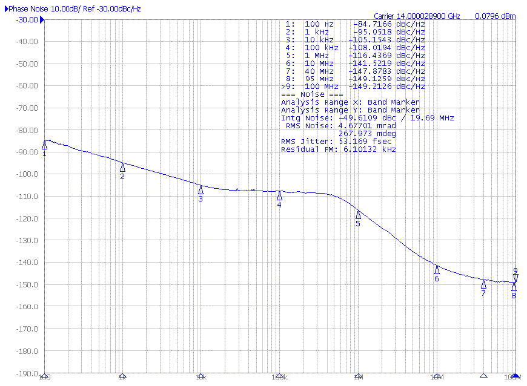

第一张相噪图怎么读
从频谱上的载波出发，学会报出相噪频偏、数值和单位。

14 GHz 是测量的载波。相噪图横轴读载波旁边的频偏，纵轴读每 Hz 带宽归一化后的相噪，单位 dBc/Hz。单根离散杂散的相对功率通常用 dBc 表示。


在实测读数中找频偏
下面只画 TI LMX2594EVM 手册 Fig. 5-1 的四个实测标记点。每相邻一格频偏增加十倍。
以上读数来自 14 GHz 测试。后续 C3 的 15 GHz 滤波器设计点单独建档。相噪换算为 RMS jitter 还需要一段积分频带，放在 D1。